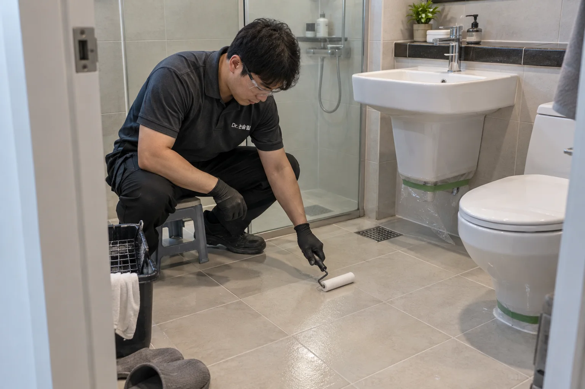

부모님이 매일 쓰는 욕실,
미끄럽진 않나요?
샤워를 마치고 돌아서거나 세면대 앞에서 한 걸음 옮길 때.
가족이 매일 맨발로 걷는 바닥의 미끄러움을 줄여주세요.

욕실을 뜯지 않고,
미끄러운 타일부터.
바닥이 미끄럽다는 이유로 욕실 전체 공사를 고민하고 있다면 표면 처리부터 살펴보세요. 시공에 적합한 기존 타일을 활용해 젖은 바닥의 미끄럼 저항을 높입니다.
- 욕실 한 곳도 시공
- 우리 집과 부모님 댁의 작은 욕실도 방문 상담.
- 철거 없이 표면 처리
- 기존 타일을 살려 샤워·세면대·출입 동선에 적용.
- 우리 타일에서 먼저
- 작은 구역의 샘플로 젖은 상태의 변화와 외관 비교.
“여기서 미끄러질 뻔했어.”
가족이 말했던 곳부터.
재질 이름이나 정확한 면적을 몰라도 괜찮습니다. 평소 미끄럽다고 느끼는 위치를 알려주세요. 실제 바닥을 살피고, 작은 구역에서 먼저 시공의 변화를 보여드립니다.
우리 집·부모님 댁 방문 상담사진은 시공 과정과 적용 공간을 설명하기 위한 브랜드 이미지입니다.